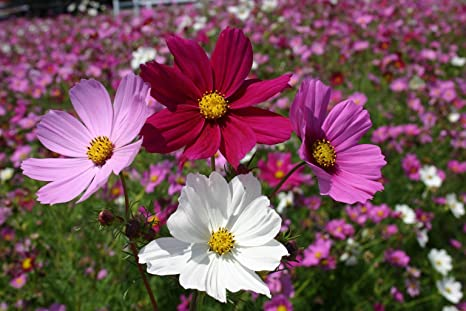
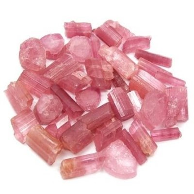

Born October 4, 2013

Ellie at 4 weeks old
Flower: Cosmos

The flower cosmos represents order, peace, and serenity. The duality of the petals and their perfect symmetry is a clear symbol of balance, bringing to mind the scales of Libra, the astrological sign for October babies born before the 23rd
Gemstone: Tourmaline

It’s believed that the pink tourmaline is the best October gemstone. Pink tourmaline represents healing and empathy; it also helps the wearer ground themself.
Tourmaline gemstone is also believed to help quiet the mind, think clearly, and attract positive energies. Ancient mystics believed this birthstone’s dazzling array of color could also inspire artistic expression in the wearer.
Fun Times!